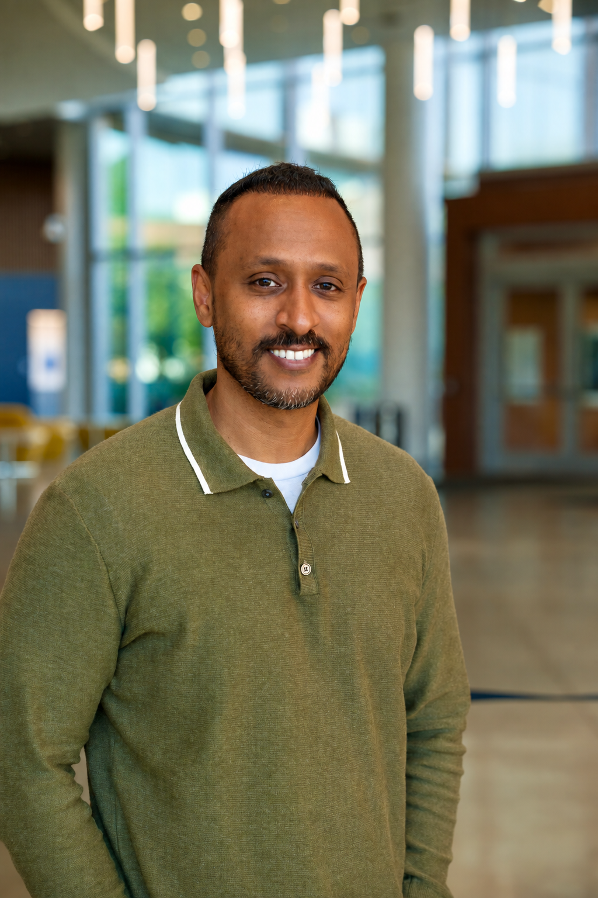

Hello, I'm Samuel
Stories connect people.
That's what drives my work.
I'm Samuel Malede Zewdu, a communications specialist and multimedia journalist.
Writing about people, science and technology.

A little about me
I help turn complex ideas into stories people can understand. At the University of Maryland's Department of Computer Science, I write about research, faculty, students and the people behind new discoveries.
My work brings together journalism, photography and digital communications. I enjoy finding the human story behind a topic and making it accessible to a wider audience.
I also support communications for Computing Catalyst, a program that helps students explore opportunities in computing.
How I tell stories
Through words
News, profiles and features that make complicated topics easier to follow.
Through images
Photography and visual storytelling that bring people and their experiences into focus.
Through connection
Web content, newsletters and social media that help communities stay informed.
My path here
Before Maryland, I worked in communications and teaching at the University of Gondar in Ethiopia. Over more than 10 years, my roles have included editor, communications director, lecturer and international relations officer.
Those experiences shaped my interest in how stories connect people across disciplines and communities.
My studies span English, applied linguistics and communication, and multimedia journalism.
Experience and education
Experience
Communications Specialist
University of Maryland
2023-present
Lecturer of Communications
University of Gondar
2019-2023
Communications and Learning Coordinator
Mastercard Foundation Scholars Program
2017-2023
Communications Director
University of Gondar
2016-2019
International Relations Officer
University of Gondar
2015-2016
Editor-in-Chief and Public Relations Head
Western University College
2014-2015
Education
Graduate Certificate, Multimedia Journalism
University of Maryland, 2026
M.A., Public Policy & Sustainable Development
University of Gondar, 2022
M.A., Communications
University of Gondar, 2017
B.A., English Language and Literature
University of Maryland, 2012
Skills
AP style writing and editing, science communication, photography, digital content, social media and multimedia storytelling.
Get to know my work
Learn about what I do, or get in touch.